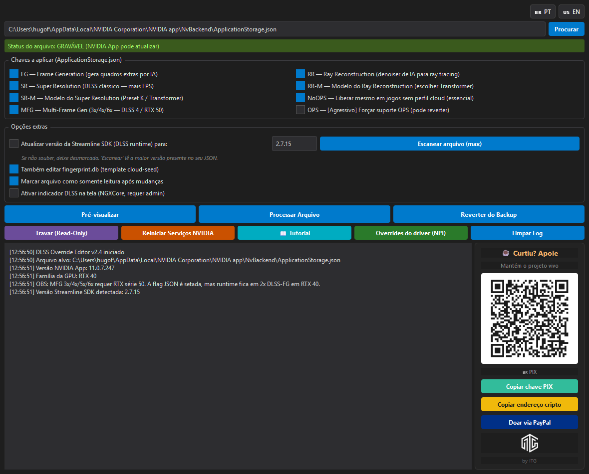
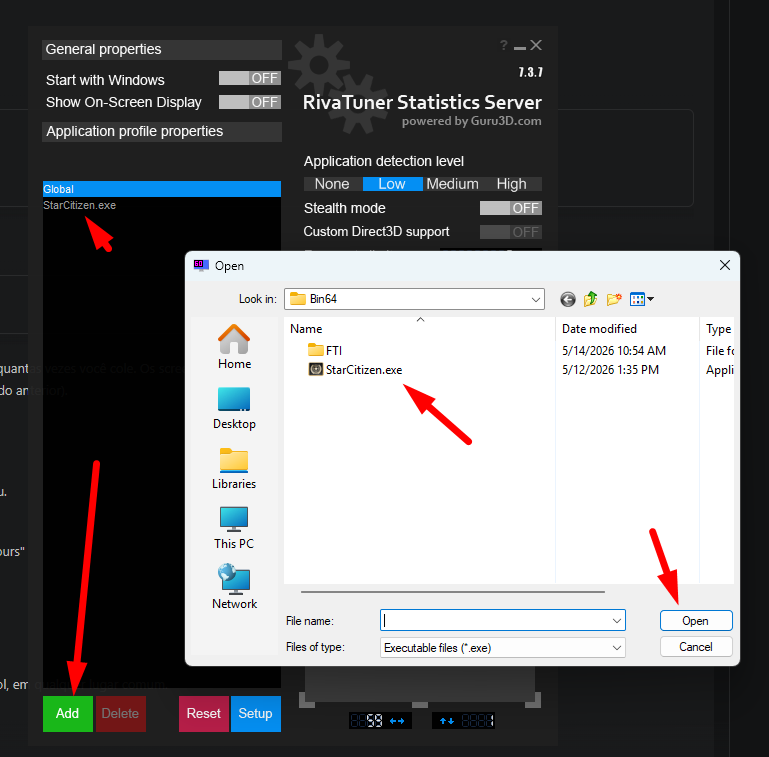
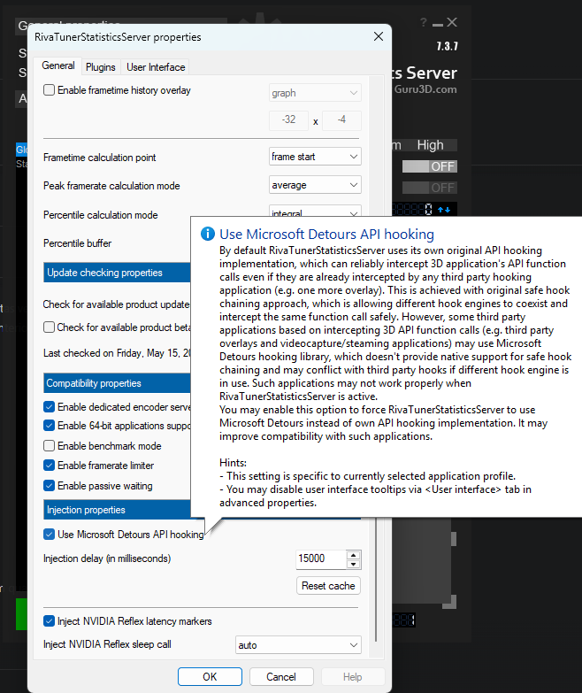

TL;DR (3 passos):
1. Abre o app → 2. Clica Processar Arquivo → 3. Clica Reiniciar Serviços NVIDIA. Pronto, todos os jogos com DLSS estão destravados.TL;DR (3 steps):
1. Open the app → 2. Click Process File → 3. Click Restart NVIDIA Services. Done — all your DLSS games are unlocked.
O que esse app faz?
What does this app do?
A NVIDIA App tem um menu chamado DLSS Override (Frame Generation, Ray Reconstruction, Super Resolution) — mas a maioria dos jogos vem com esses toggles desativados pela NVIDIA. Esse programa edita o arquivo de configuração da NVIDIA App e liga essas opções em todos os jogos da sua biblioteca de uma vez.NVIDIA App has a DLSS Override menu (Frame Generation, Ray Reconstruction, Super Resolution) — but most games come with those toggles disabled by NVIDIA. This program edits NVIDIA App's config file and enables those options in every game in your library at once.
Funciona em qualquer PC com Windows 10/11 + GPU RTX 20/30/40/50.
Works on any Windows 10/11 PC with an RTX 20/30/40/50 GPU.
Não precisa instalar nada além do .exe. Não toca nos arquivos dos jogos.
No install needed beyond the .exe. Doesn't touch game files.
Cria backup automático antes de mexer em qualquer coisa.
Creates an automatic backup before touching anything.
Suporte bilíngue: clica nas bandeiras 🇧🇷/🇺🇸 no topo do app.
Bilingual: click the 🇧🇷/🇺🇸 flags at the top of the app.
Passo a passo (a parte que importa)
Step by step (the part that matters)

Tela principal — você vai usar só 2 botões.
Main screen — you only need 2 buttons.
1
Abra o dlss_override_plus_v2.6.2.exe
Open dlss_override_plus_v2.6.2.exe
Duplo-clique. Não precisa "Executar como administrador" — só precisa se você quiser ativar o indicador on-screen (opcional, passo 5).
Double-click. No need to "Run as administrator" — only required if you want to enable the on-screen indicator (optional, step 5).
2
Escolha seu idioma (🇧🇷 PT ou 🇺🇸 EN)
Pick your language (🇧🇷 PT or 🇺🇸 EN)
Botões de bandeira no canto superior direito da janela. Troca em tempo real.
Flag buttons in the top-right corner of the window. Switches instantly.
3
Confere as checkboxes (já vêm certas)
Check the checkboxes (already set correctly)
Não mexe. O padrão já libera tudo (FG, RR, SR, Modelos, NoOPS, MFG marcados / OPS desmarcado).
Cada jogo tem uma versão DLSS runtime pinada. O app preenche automaticamente a maior versão que existe no seu arquivo. Mexa só se souber.
Each game has a pinned DLSS runtime version. The app auto-fills with the highest version present in your file. Only change if you know what you're doing.
🎮 Star Citizen — DLSS 4.5
Cenário atual: A meta em 2026 é DLSS 4.5. Testes profundos da comunidade no Reddit/Spectrum.Current meta: 2026's meta is DLSS 4.5. Based on deep community testing on Reddit/Spectrum.
Com .dll DLSS 4.5 (mais novas)
With DLSS 4.5 .dlls (newer)
Cenário
Scenario
Preset
Quando usar
When to use
DLAA (qualidade máxima nativa)
DLAA (max native quality)
K
RTX 4080 / 4090 — anti-aliasing perfeito
RTX 4080 / 4090 — perfect anti-aliasing
DLSS Quality / Performance
DLSS Quality / Performance
M
Quando precisa de FPS — corrige shimmering
When you need FPS — fixes shimmering
Com .dll antigas (3.7/3.8)
With older .dlls (3.7/3.8)
Cenário
Scenario
Preset
Observação
Note
Upscaling
E
Padrão ouro antigo — clareza em movimento
Old gold standard — clarity in motion
DLAA
C
Menor ghosting absoluto
Lowest absolute ghosting
dlsstweaks.ini
[DLSS]
ForceDLAA = true
OverrideAutoMultiple = true
OverrideAppId = true
[DLSSPresets]
DLAA = K
Quality = M
Performance = M
Configurações in-game
In-game settings
⚙️ Upscale Tech: Transformer (não use "Legacy")
⚙️ Upscale Tech: Transformer (don't use "Legacy")
⚙️ Smooth Motion: ON — salva nas cidades de pouso (precisa de HAGS ativo + fix RTSS abaixo)
⚙️ Smooth Motion: ON — saves frames in landing cities (HAGS must be on + RTSS fix below)
⚙️ V-Sync: OFF — +30 FPS deixando G-Sync do monitor agir
⚙️ V-Sync: OFF — +30 FPS by letting monitor G-Sync handle it
O Smooth Motion da NVIDIA (frame interpolation no driver) dá tela preta no Star Citizen porque colide com o overlay padrão do RivaTuner Statistics Server (RTSS). O fix é fazer o RTSS usar Microsoft Detours API hooking no profile do StarCitizen.exe.
Como o botão funciona (v2.6.2): ele abre o RTSS pra você e mostra um guia visual com 2 passos dentro do nosso app. Você faz os cliques na interface do RTSS — o nosso app só te orienta. Como o RTSS é assinado por uma CA confiável, os antivírus não reclamam (diferente da versão anterior que tentava editar configs por baixo e disparava o Kaspersky).
Pré-requisito: RTSS instalado. Se não tiver, o botão te oferece abrir a página de download (gratuito, ~18 MB, na Guru3D). Não precisa do MSI Afterburner — só o RTSSSetup737.exe.
Passo 1 — Adicionar StarCitizen.exe (se ainda não estiver na lista)
Na lista da esquerda Application profile properties, procure StarCitizen.exe. Se não tiver, clique no botão verde Add e navegue até ...\StarCitizen\LIVE\Bin64\StarCitizen.exe.
Bônus: no canto superior esquerdo, marque Start with Windows ON pra RTSS iniciar com o PC.

Passo 2 — Ativar Microsoft Detours API hooking
Com StarCitizen.exe selecionado na lista, clique no botão azul Setup → aba General → role até Injection properties → marque ✅ Use Microsoft Detours API hooking → OK.

✅ Pronto. Smooth Motion vai funcionar sem tela preta. Pode fechar o RTSS — ele continua na bandeja.
NVIDIA Smooth Motion (driver-side frame interpolation) causes a black screen in Star Citizen because it conflicts with the RivaTuner Statistics Server (RTSS) default overlay hook. The fix is to make RTSS use Microsoft Detours API hooking on the StarCitizen.exe profile.
How the button works (v2.6.2): it opens RTSS for you and shows a visual 2-step guide inside our app. You do the clicks in the RTSS UI — our app just walks you through. Since RTSS is signed by a trusted CA, antivirus doesn't complain (unlike the previous version which tried to edit configs under the hood and triggered Kaspersky).
Prerequisite: RTSS installed. If not, the button offers to open the download page (free, ~18 MB, from Guru3D). You don't need MSI Afterburner — just RTSSSetup737.exe.
Step 1 — Add StarCitizen.exe (if not already in the list)
In the left list Application profile properties, look for StarCitizen.exe. If it's not there, click the green Add button and browse to ...\StarCitizen\LIVE\Bin64\StarCitizen.exe.
Bonus: in the top-left corner, toggle Start with Windows ON so RTSS launches with your PC.
Step 2 — Enable Microsoft Detours API hooking
With StarCitizen.exe selected in the list, click the blue Setup button → General tab → scroll to Injection properties → check ✅ Use Microsoft Detours API hooking → OK.
✅ Done. Smooth Motion will work without the black screen. You can close RTSS — it stays in the system tray.
FAQ
É seguro? Pode banir minha conta?
Is it safe? Could it ban my account?
Não. Só edita arquivos de config da NVIDIA App, no seu PC. Não toca em jogos, não injeta em processo, não é detectável por anti-cheat.
No. It only edits NVIDIA App config files on your PC. Doesn't touch games, doesn't inject into processes, not detectable by anti-cheat.
Funciona com qualquer GPU?
Works with any GPU?
Qualquer RTX (20/30/40/50). Mas algumas features são limitadas por hardware: MFG 3x/4x/6x requer RTX 50. DLSS-FG 2x requer RTX 40+. SR + RR funcionam em todas.
Any RTX (20/30/40/50). But some features are hardware-locked: MFG 3x/4x/6x needs RTX 50. DLSS-FG 2x needs RTX 40+. SR + RR work on all.
Roda toda vez que liga o PC?
Do I run it every time I boot?
Não. Roda uma vez, fica. Só roda de novo se instalou jogo novo ou se NVIDIA App atualizou.
No. Run once, it sticks. Only run again if you install a new game or NVIDIA App updates.
Antivírus reclamou do .exe — é seguro?
Antivirus flagged the .exe — is it safe?
Sim, é seguro. É falso positivo comum em Python compilado com PyInstaller. Razões: (1) hackers também usam PyInstaller, então antivírus desconfiam; (2) o .exe não está assinado com certificado de signing (custaria $80-500/ano); (3) Windows SmartScreen bloqueia qualquer .exe sem histórico de downloads. Você pode: verificar no VirusTotal, rodar direto do código fonte (requer Python + PyQt6), ou adicionar exceção no Windows Defender.
Yes, it's safe. Common false positive with PyInstaller-bundled Python. Reasons: (1) malware authors use PyInstaller too, so antivirus is trained to be suspicious; (2) the .exe isn't code-signed (a cert costs $80-500/year); (3) Windows SmartScreen blocks any .exe with no download history. You can: verify on VirusTotal, run from source (requires Python + PyQt6), or add an exception in Windows Defender.
Troubleshooting
Troubleshooting
Deu errado e o NVIDIA App tá esquisito.
1. Abre DLSS Override+
2. Clica Destravar
3. Clica Reverter do Backup
4. Reinicia o PC
Volta tudo ao original.Something broke and NVIDIA App acts weird.
1. Open DLSS Override+
2. Click Make Writable
3. Click Revert to Backup
4. Reboot
Everything goes back to original.
☕ Curtiu? Apoie
☕ Liked it? Support
Esse programa é gratuito e vai continuar sendo. Se ajudou e quiser apoiar, qualquer valor ajuda — de um café até um SSD novo. Obrigado! 🙏This program is free and will stay free. If it helped and you want to support it, any amount helps — from a coffee to a new SSD. Thank you! 🙏
💎 Crypto — BNB Smart Chain (BEP20)
Mesma carteira para USDT e BTCB/WBTC
Same wallet for USDT and BTCB/WBTC
Aceita qualquer token BEP20 (USDT, USDC, BTCB, BUSD, etc.)
Accepts any BEP20 token (USDT, USDC, BTCB, BUSD, etc.)
0x724ec14cbfabdf7bb07653bd73298ca1a4730ffb
⚠️ ATENÇÃO: Só aceita rede BSC/BEP20. Não envie Bitcoin nativo — o dinheiro será perdido.⚠️ WARNING: Only accepts BSC/BEP20 network. Don't send native Bitcoin — funds will be lost.